Download and Install the Qt Creator SDK
The Qt Creator SDK (Software Developer Kit) is a program you will use to create your own programs in C++ with FeetWetCoding. You can read more about what Qt Creator is, and the Qt Toolkit it is based on in the Qt and Qt Creator page, but it is not necessary for you to read that now.
In order to use the FeetWetCoding C++ learning framework, you will need to download and install Qt Creator. (Note that "QtSDK" and "Qt Creator" mean the same thing for our purposes here.) The following instructions are valid at the time this documentation was generated, when Qt Creator is owned by Nokia. In the future it may happen that Qt and Qt Creator are owned by someone else: in that case, just google "Qt Creator download" and find the correct place to download it.
If you are already comfortable downloading applications with your web browser, just get the online installer from http://qt.nokia.com/downloads, and you can skip the next section, and move on to the instructions for running the QtSDK online installer.
These instructions are for downloading and installing Qt Creator for Windows using Internet Explorer (IE) or Firefox. Instructions for Linux and Mac OS X are planned for future versions of this documentation.
Instructions to download the QtSDK:
Open http://qt.nokia.com/downloads in your web browser. The "online installer" will download a smaller program that will download the rest of QtCreator. The "offline installer" will download the whole installer program at once, which is well over 1Gb in size. These instructions will show how to install QtCreator using the online installer.
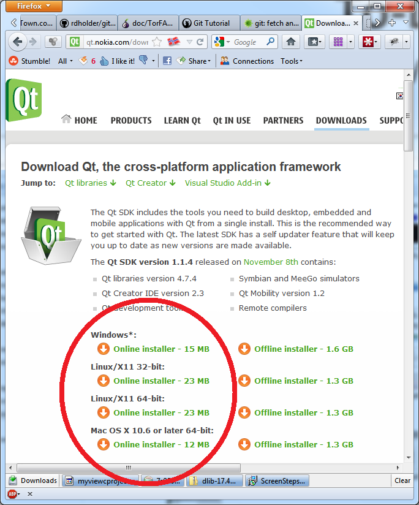
...if your web browser is Internet Explorer, you will need to click the "Run" button when it comes up to run the online installer:
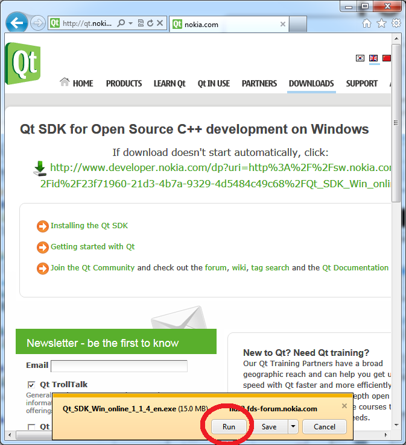
...if your web browser is Firefox click "Save File" when prompted:
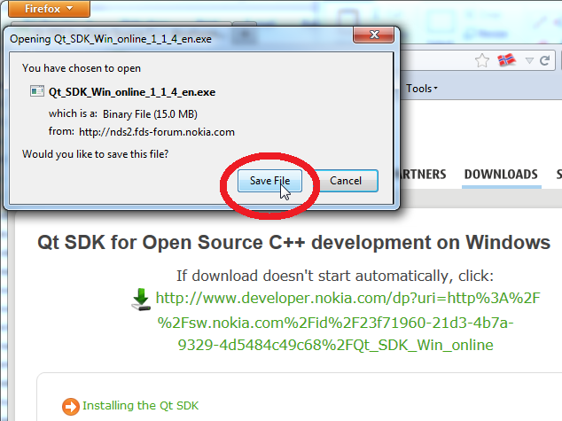
...once the file has downloaded, it will run automatically from IE if you clicked the "Run" button.
In Firefox, once you clicked the "Save File" button, and the online installer finishes downloading, you will need to open the Firefox Downloads window:
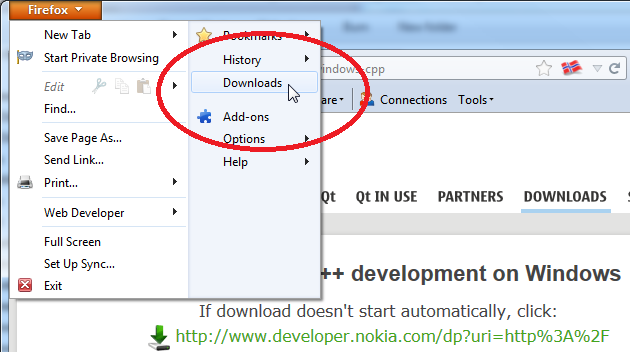
...with the Firefox Downloads window open, double click the top entry, which should be the Qt SDK online installer:
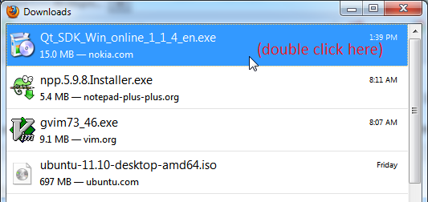
Don't worry if the filename is not exactly the same. By the time you read this, the number "1_1_4" will probably have changed.
If you get a security warning, click "Run":
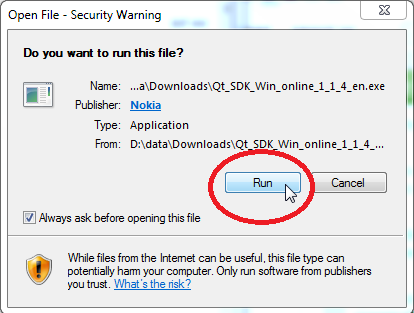
Running the QtSDK online Installer
If you are familiar with installing applications, just run the installer and accept all the defaults (if you choose to change things during the installation, remember what you changed, and where you put things) and when the install finishes, run Qt Creator and skip to Build and Run FeetWetCoding to make sure Qt Creator installed OK. If you need help installing Qt Creator, continue with these detailed instructions.
When the QtSDK online installer begins to run (as explained in the previous section), you should see a popup like this:
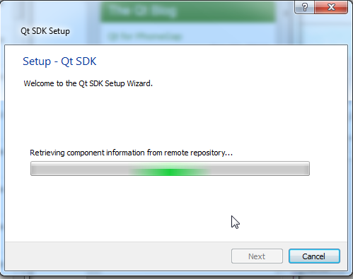
...this should last a few moments, and then you should see the welcome message. Click "Next" to continue with the installation:
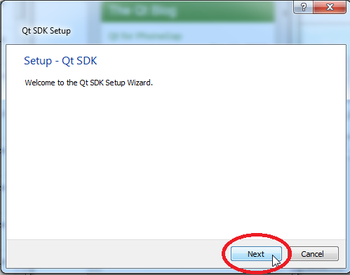
...the installer will ask you where you want the QtSDK to be located. Unless you have a good reason for installing it somewhere else, just accept the default install location and click "Next":
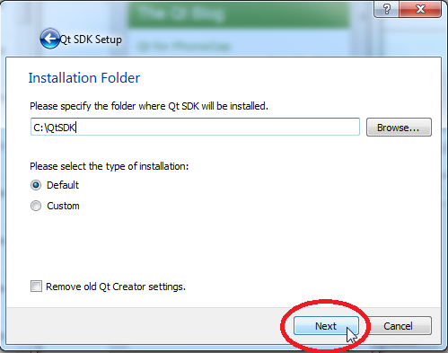
...if you agree to the license, click the radio button saying you agree, and click "Next" to continue with the installation:
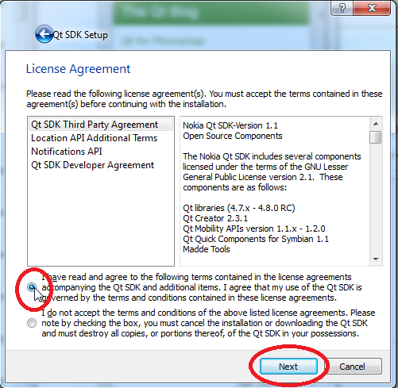
...the installer will allow you to choose where the Start Menu shortcuts for Qt SDK live. Unless you have a good reason for changing it, just leave the default value and click "Next":
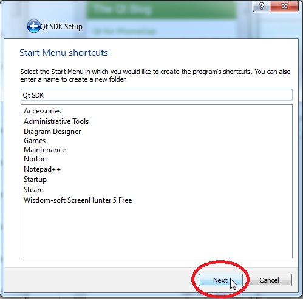
...the Qt SDK is ready to install. Click the "Install" button:
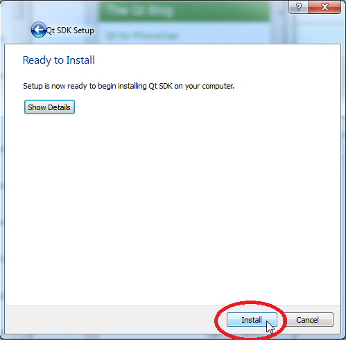
...while the components are downloading, you should see a progress bar like this:

...with a broadband internet connection, it should normally take around fifteen minutes for the download to complete. When the download is finished, your status window should look like this:
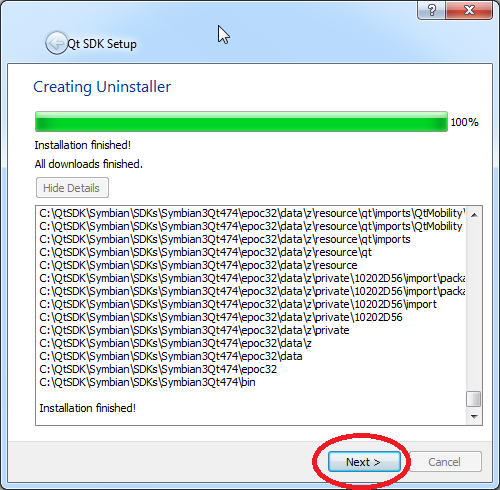
...click "Next", and then click "Finish" to complete the installation:
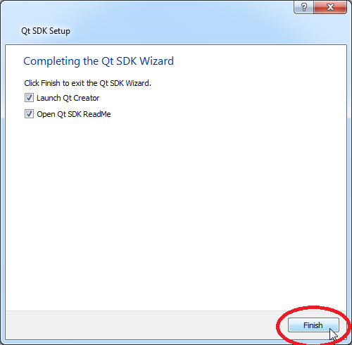
Building and Running FeetWetCoding
If Qt Creator doesn't launch automatically when the installer finishes, just launch it manually from the Start Menu:
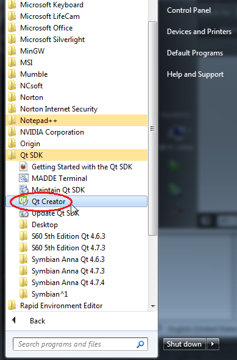
... Qt Creator should start up. Click on "File" and "Open File or Project...":
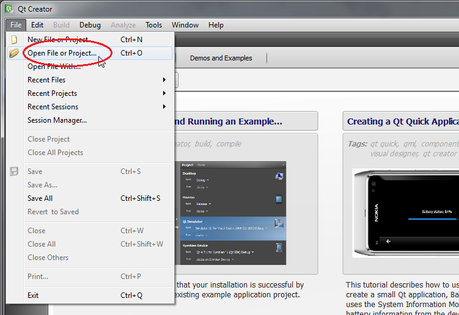
...navigate to wherever you unzipped/installed this FeetWetCoding software package, and double-click on the "FeetWetCoding" folder to open it:
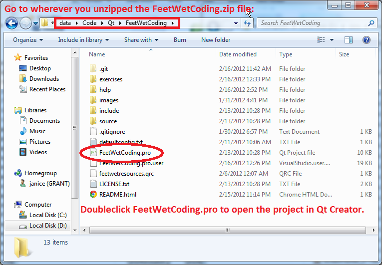
...and double-click or select the "FeetWetCoding.pro" QtCreator project file, to open it:
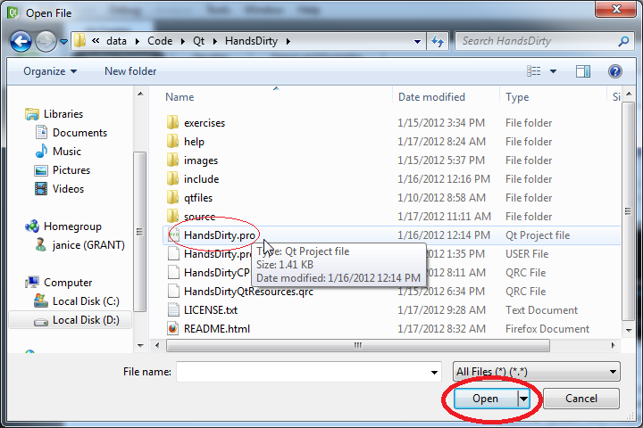
...that should open the FeetWetCoding project within QtCreator. You will be prompted to setup the project. Leave the default settings as they are and click "Finish":
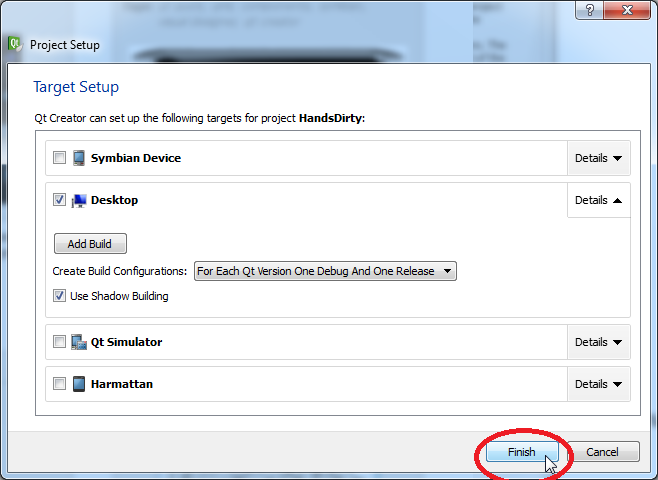
Click the green "Run" button to build and run FeetWetCoding:
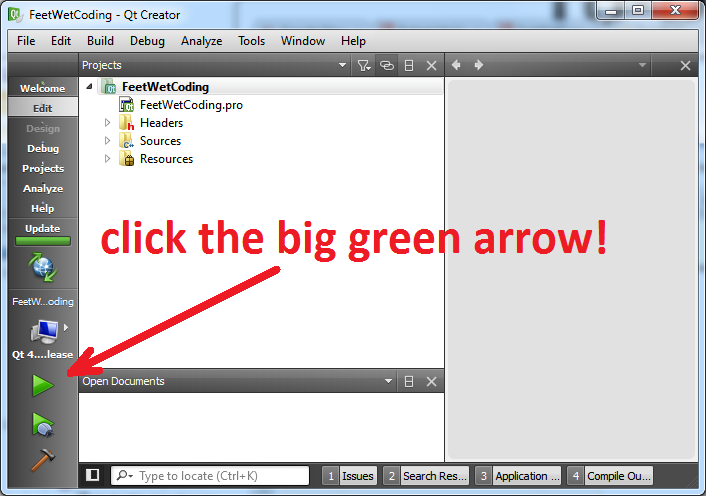
...if everything installed correctly, FeetWetCoding will build, which will take some time. You can click on the button on the bottom of the Qt Creator window entitled "4 Compile Output" if you would like to see the build messages scroll by while you are waiting for the build to finish.
Eventually, the program should run and you should see a window popup which displays the FeetWetCoding drawing area:
Congratulations! You have successfully installed the QtSDK and are ready to learn how to use FeetWetCoding!
FeetWetCoding version 0.0.1 copyright (c) 2011,2012 Robert Holder, Janice Dugger.
support@feetwetcoding.com -- Latest Source: https://github.com/rdholder/FeetWetCoding
Created with the Personal Edition of HelpNDoc: Free CHM Help documentation generator